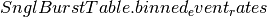

I would like to study the rate at which event triggers are generated by the ExcessPower gravitational-wave burst detection algorithm, over a small stretch of data, binned by various thresholds on signal-to-noise ratio (SNR).
The data from which these events were generated are a simulation of Gaussian noise with the Advanced LIGO design spectrum, and so don’t actually contain any real gravitational waves, but will help tune the algorithm to improve detection of future, real signals. First, we import the SnglBurstTable and read the events
>>> from gwpy.table.lsctables import SnglBurstTable
>>> events = SnglBurstTable.read('../../gwpy/tests/data/H1-LDAS_STRAIN-968654552-10.xml.gz')
Now we can use the  method to calculated the event rate in a number of bins of SNR.
>>> rates = events.binned_event_rates(1, 'snr', [2, 3, 5, 8], operator='>=',
>>> start=968654552, end=968654562)
The list [2, 3, 5, 8] and operator >= specifies SNR tresholds of 2, 3, 5, and 8. Finally, we can make a plot:
>>> plot = rates.plot(label='name')
>>> plot.set_xlim(968654552, 968654562)
>>> plot.set_ylabel('Event rate [Hz]')
>>> plot.set_title('LIGO Hanford Observatory event rate for GW100916')
>>> plot.add_legend()
>>> plot.show()
(Source code, png)
{kind=link}